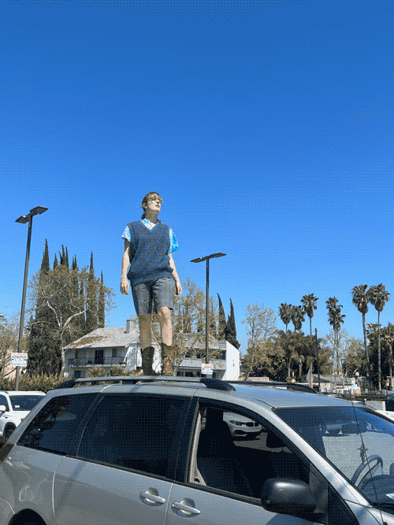

Tacy's Network Media Homepage
Description-Under Construction!
Hello world, I'm Tacy this is my homepage for DESMA 161 Network Media. I'll use it to post the projects and weekly assignments I produce in the that class.
They'll be listed like this: